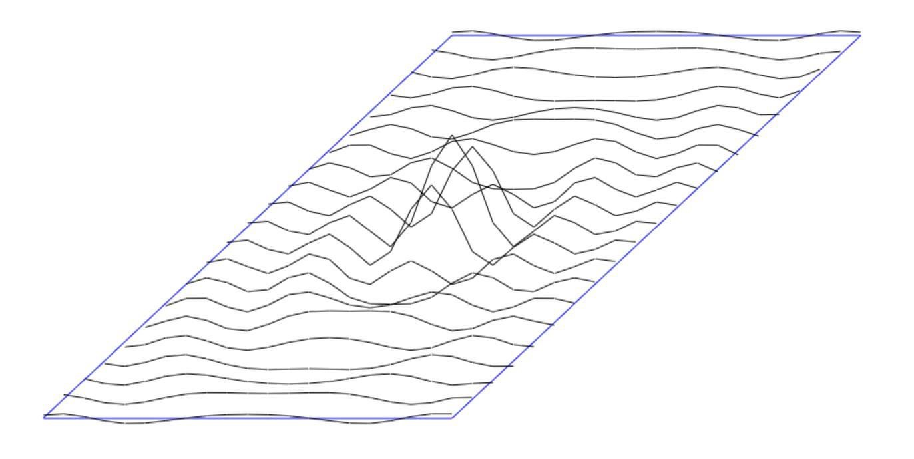
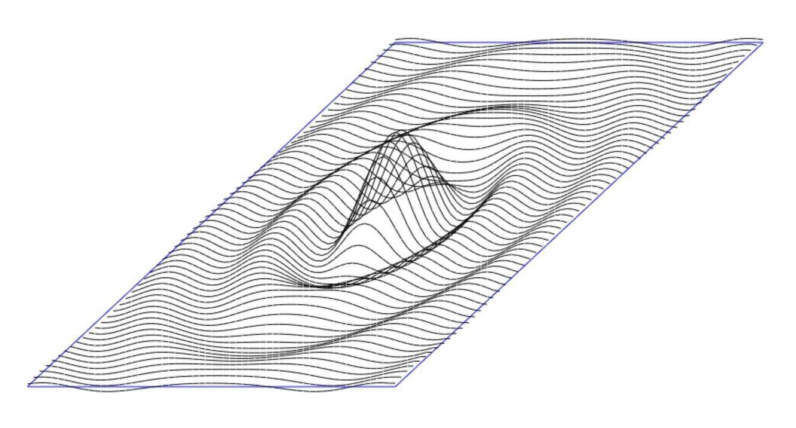
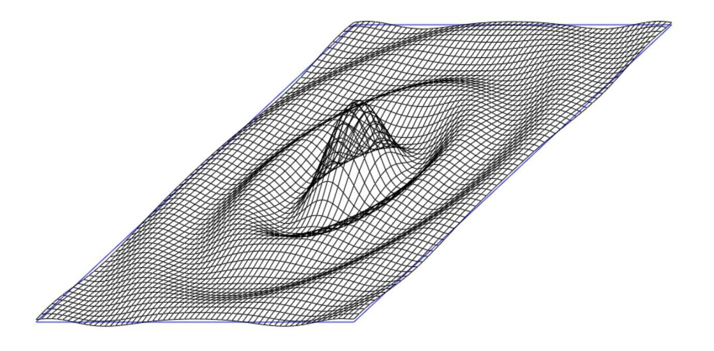
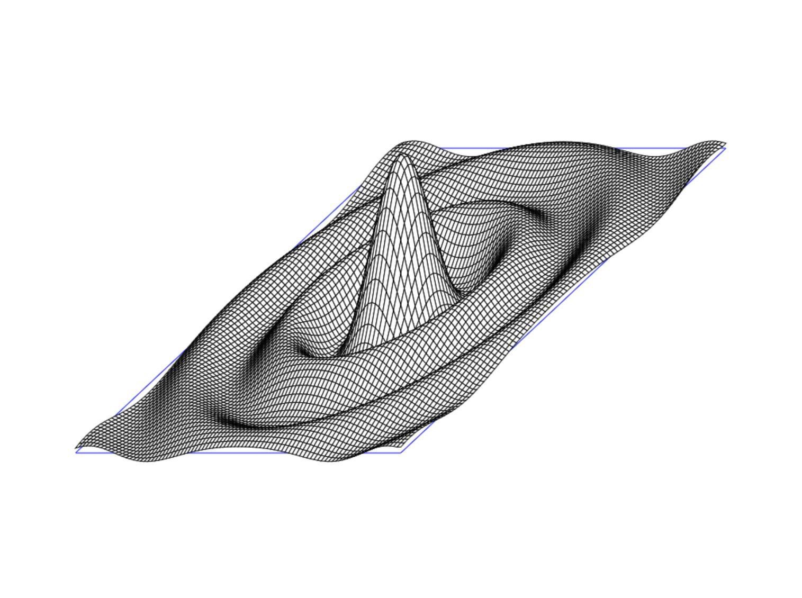

Back in 1977, I was a senior at Roosevelt High School, Seattle, and my crowning glory was a 3-D graphing program. I had programmed on the Wang 600 throughout my four years there and had read a magazine article about 3-D graphs.
The first rendition was a 20x20 resolution plot of something I had seen the math teacher plot in 2-D. Something like this:

It took about 20 minutes to draw on the Wang flatbed plotter, but it was amazing. I just showed it to my Alg-Trig teacher and got an A in the class (really).
I learned, the hard way, about things like cumulative-errors and drift.
Then in 1984 my co-worker had a TurboPascal 1.0 diskette, which I immediately installed on my then-new IBM-AT with CGA and a 16 color monitor. My first forey into Pascal was to recreate my 3D graphing program. It was so impressive the execs didn't even ask if I wanted to move to the Department of New Technology, they just gave me a new computer in a new office and a book on C programming and said 'start'.
2022 rolls around and I'm itching to do the 3D graph program again but this time in JavaScript. The first cut was what the image above but I quickly realized 100x100 was feasable and that 10,000 calculations was effectively instantionous - even on a iPhone!

Because I was no longer plotting based on deltas and now using true values, the plotting on the Y-Axis worked.

I wanted to hide the lines behind:
